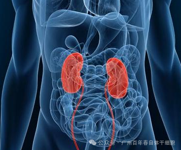
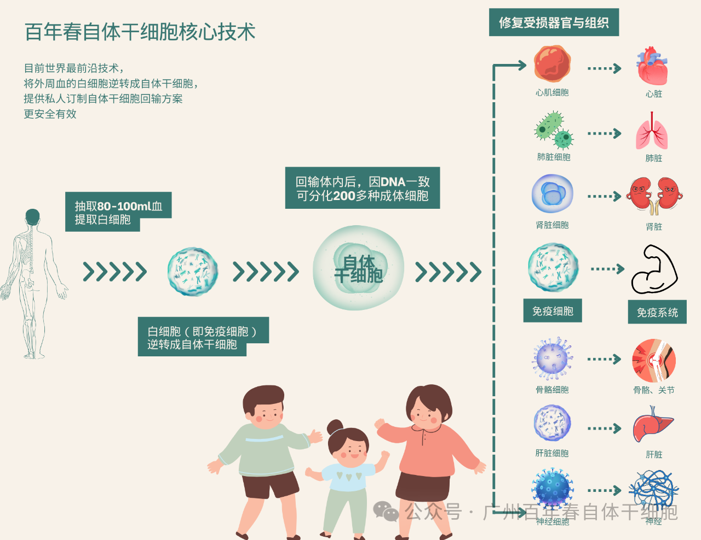
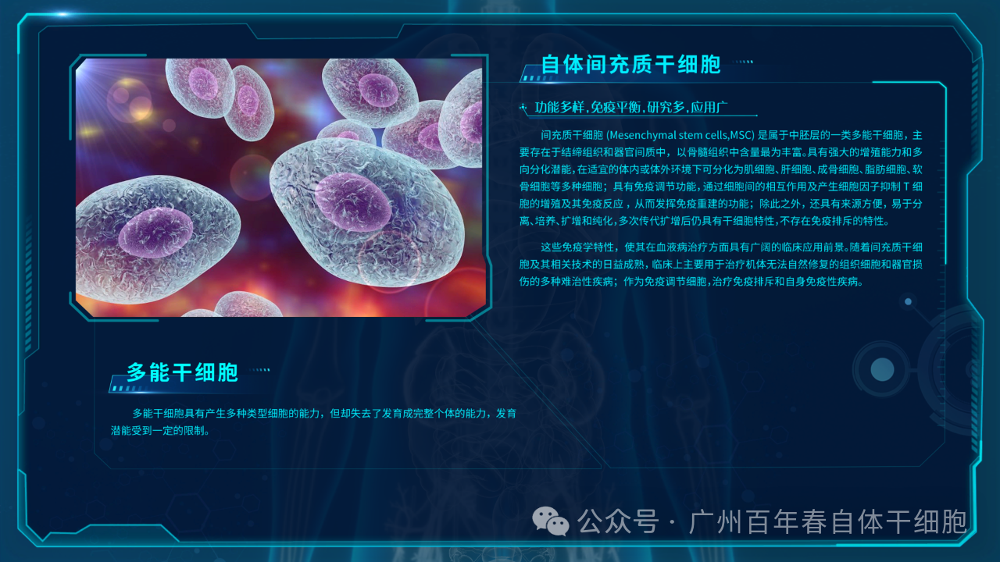
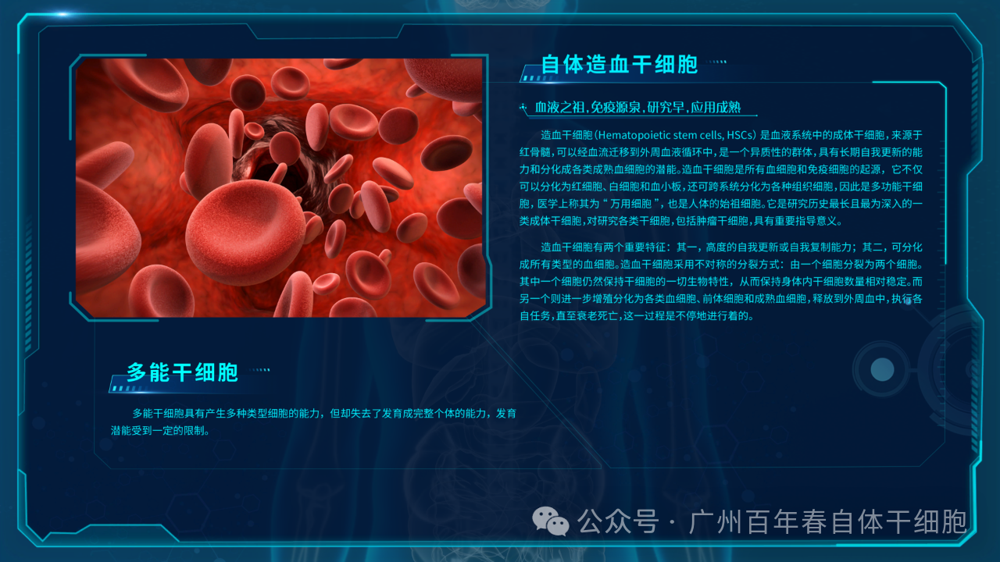
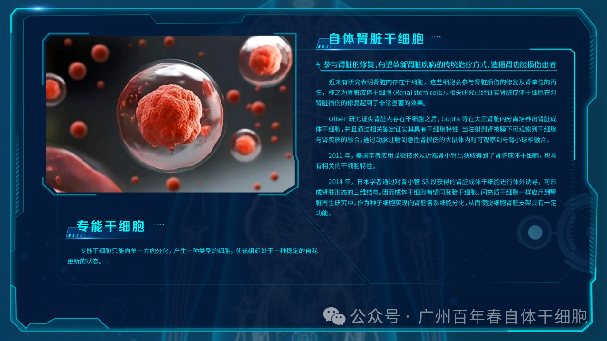
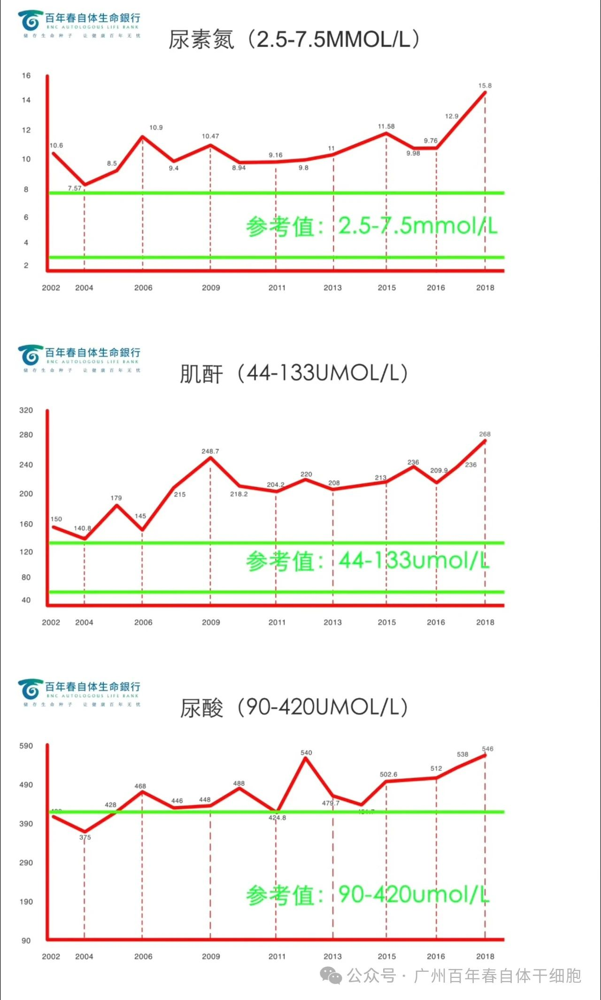
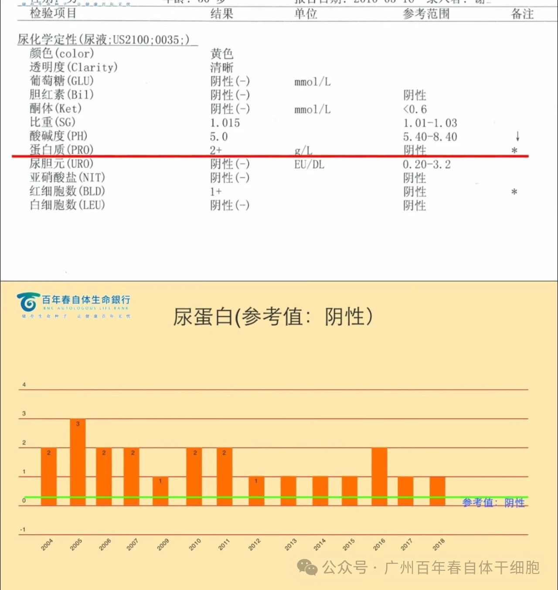
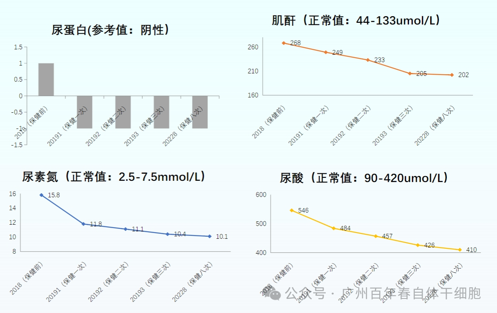
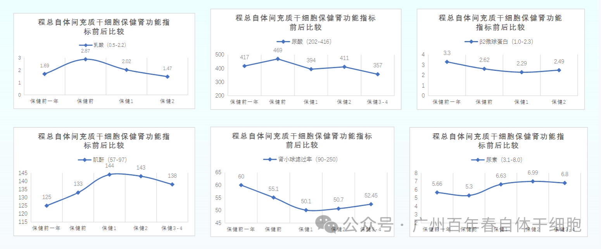

别等身体亮红灯！百年春自体干细胞，为您定制细胞级抗衰防线
2026-03-04

About Us
关于百年春

百年春自体干细胞通过抽取客户血液，提取白细胞逆转成自体干细胞再回输。一次性逆转回输剂量高达2亿以上，来源于自体更安全、高效、无排斥及任何副作用。

自体间充质干细胞
具有向肾实质干细胞分化的潜能，可以分化为系膜细胞、上皮细胞、足细胞、内皮细胞团等多种肾脏细胞。通过调节免疫系统，减少炎症因子的释放，从而减轻肾脏的炎症反应，有助于保护肾脏免受进一步的损伤。

自体造血干细胞
具有长期自我更新的能力和分化成各类成熟血细胞和所有类型的免疫细胞的潜能。能迁移到受损的肾脏区域并分化特定的肾细胞类型，如肾小管上皮细胞，直接补充受损的肾组织。

自体肾脏干细胞
能直接归巢到受损的肾脏区域，可以分化为系膜细胞、上皮细胞、足细胞、内皮细胞团等多种肾脏细胞。 直接参与肾脏损伤的修复及肾单位的再生。

客户案例1：莫先生IgA肾病病史17年。蛋白尿呈阳性，尿酸、肌酐、尿素氮逐渐升高，肾功能损伤严重已接近尿毒症状态。以下是保健前检测报告：


保健后1月内尿蛋白转阴，多次保健后尿酸、肌酐和尿素氮持续下降；目前已接受八次自体干细胞保健。现该客户经数据显示已成功逆转IgA肾病，并且未有复发现象。


△ 以上是客户2保健前、后的检测数据对比
各项数据表明，自体间充质干细胞可能正在修复客户的肾小球结构，维护客户肾脏结构完整性，从而使肾功能得到改善。
扫码关注